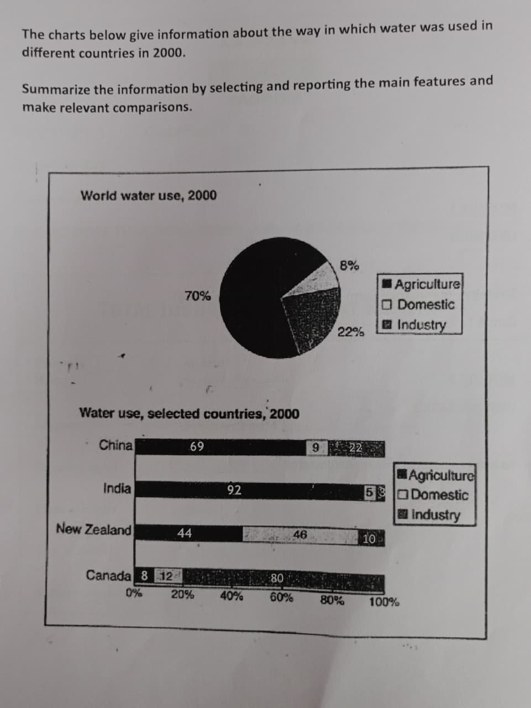

Step 1: Task Overview
Choose your preferred format for a brief overview of how to approach this type of task.
Listen to the overview carefully before starting your plan.
✅ Completed! Move to the next step.
Step 2: Brainstorm
Task 1 Question
Summarize the information by selecting and reporting the main features and make relevant comparisons.
6-Minute Focus Timer
Use the timer to brainstorm ideas and structure your response. This helps practice time management.
Step 3: Key Vocabulary
Review the key vocabulary for this task. Using a range of words is essential for a high score.
Burgeoning adj
Growing rapidly
The burgeoning interest in foreign education reflects global academic integration.
Far-reaching adj
Having extensive impact
The far-reaching effects of international study influence economies and cultures alike.
Augment verb
Enhance or increase
Studying abroad can augment one’s academic and interpersonal capabilities.
Alleviate verb
Ease or lessen
Exposure to diverse societies can alleviate prejudice and narrowmindedness.
Adverse adj
Negative or harmful
Students might face adverse mental effects due to homesickness and cultural stress.
Brain drain noun
Migration of skilled professionals
Excessive brain drain can weaken a nation’s developmental progress.
Step 4: Plan Introduction & Overview
Review these sample introductions and overviews. Notice how they paraphrase the prompt and state the main trends.
Sample Introductions
Sample 1
The pie chart illustrates the global distribution of water consumption across three sectors — agriculture, domestic use, and industry, while the bar chart compares how these same categories of water were utilised in China, India, New Zealand, and Canada in the year 2000, measured in percentages.
Sample 2
The pie chart details the global distribution of water consumption across three sectors—agriculture, domestic use and industry—whereas the accompanying bar chart contrasts the proportional use of water within the same categories across China, India, New Zealand and Canada in 2000, scaled in percentages.
Sample Overviews
Sample 1
Overall, agriculture dominated global water use, and the same pattern was evident in China and India, whereas Canada and New Zealand allocated a significantly larger proportion of water to industrial and domestic purposes. Industries consumed the lowest share globally, but domestic use was the least significant sector in both China and India.
Sample 2
Overall, water usage at the global level was heavily skewed towards agricultural activities, and a similar pattern was evident in China and India. In sharp contrast, Canada and New Zealand indicated more diversified consumption, with significantly greater emphasis on domestic and industrial utilisation. Notably, industry accounted for the smallest global share, while agriculture dominated national patterns in two of the four countries.
Step 5: Plan Body Paragraph 1
Focus on agriculture and the major contrasts between the countries.
Body Paragraph 1 — Bullet Points (Agriculture Focus & Major Contrasts)
- • Worldwide, agriculture constituted a dominant 70%, far surpassing domestic (8%) and industrial usage (22%).
- • India showed an extreme agricultural reliance, with 92% of its water directed to farming — the highest among all countries.
- • China, while less pronounced, still allocated a substantial 69% to agriculture, reflecting similar regional dependency.
- • New Zealand used 44% for agriculture, indicating a far more balanced distribution than either Asian nation.
- • Canada, at just 8%, recorded the lowest agricultural allocation, representing a complete reversal of India’s pattern.
Step 6: Plan Body Paragraph 2
Detail the industrial and domestic usage, highlighting the remaining contrasts.
Body Paragraph 2 — Bullet Points (Industry + Domestic + Remaining Contrasts)
- • Industry, which represented 22% globally, was exceptionally dominant in Canada (80%), making it the most industrial-focused country in the dataset.
- • China mirrored the global industrial average, also at 22%, whereas New Zealand (10%) and India (3%) showed minimal industrial utilisation.
- • For domestic usage, New Zealand (46%) allocated the largest share, more than quadruple India’s 5%, and substantially above Canada’s 12% and China’s 9%.
Task Complete!
You have successfully finished the guided writing task.
You can now take the quiz or review your work.
Or scan to take the quiz on your mobile: